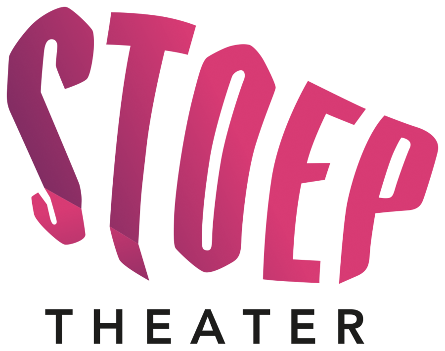

Theater de Stoep bevindt zich aan de buitenrand van het winkelcentrum in Spijkenisse aan het Theaterplein 1, 3201 DH Spijkenisse met in de nabijheid verschillende restaurants en cafés.
Tegenover het theater bevindt zich de Theatergarage. Adres van de garage: Gorsstraat 22. De Theatergarage is 24 uur per dag geopend. In de garage zijn speciale parkeerplaatsen voor mindervaliden in de nabijheid van de lift en uitgang van de garage. Er zijn in totaal 5 betaalautomaten. Deze bevinden zich bij beide uitgangen van de garage en op -2. Let op: wij verkopen geen uitrijkaarten. Betalen voor parkeren in de theatergarage kan op volgende manieren: Via een parkeerkaartje die u afrekent bij de betaalautomaat of bij de uitrit-automaat; Met uw bankpas (bekijk de instructievideo) U kunt inrijden door uw bankpas aan te bieden bij de inrit-automaat. Bij het uitrijden biedt u de pas nogmaals aan bij de uitrit-automaat. Voordeel: u hoeft dan dus niet in de rij bij de betaalautomaat. De Theatergarage is eigendom van de Gemeente Nissewaard. Voor de meest recente informatie verwijzen wij u naar de website van de Gemeente. Bij storingen en/of klachten kunt u contact opnemen met Parkeerbeheer Spijkenisse (0181-696 778).
U kunt ook parkeren in de parkeergarage Kolkplein. Deze garage is vaak minder druk, wat zorgt voor een snellere doorstroming en een vlotte uitrit
Het theater is bereikbaar met openbaar vervoer. Metrostation Spijkenisse Centrum is op 10 minuten loopafstand van het theater. Wilt u met de bus naar het theater, dan zijn er meerdere opties. Kijk voor actuele reisinformatie op 9292.
Het is in het winkelcentrum van Spijkenisse en dus ook bij het theater niet toegestaan om fietsen te stallen. In de directe nabijheid van het theater bevinden zich twee fietsenstallingen: één aan de Damstraat 21 (naast de Dirk supermarkt) en één aan de Oostkade 22. Beide stallingen zijn 24 uur per dag geopend, voorzien van camerabewaking en gratis.
Dit seizoen vinden er 5 concerten plaats in het witte kerkje van Simonshaven. Het adres van de kerk is Lageweg 1, 3212 LZ Simonshaven. De deuren van de kerk zijn geopend vanaf 1 uur voor aanvang van het concert. Parkeren is mogelijk rondom de kerk.